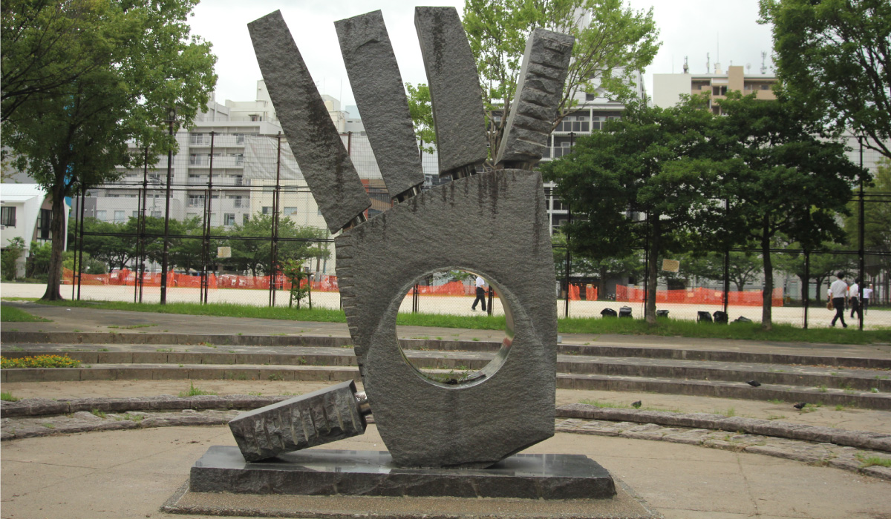
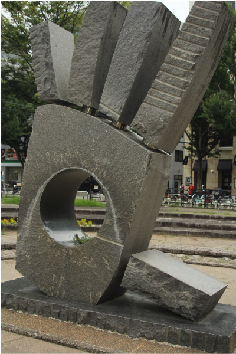
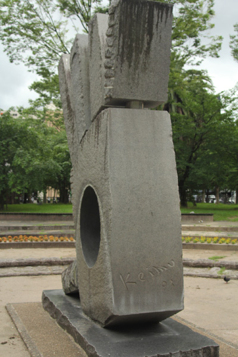
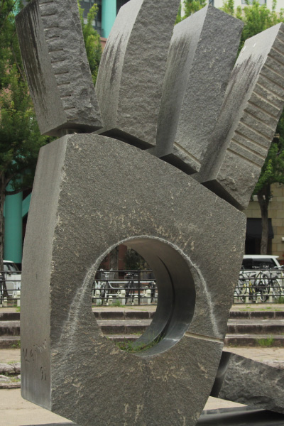

鎌田 恵務
  
博多駅筑紫口近くにある中比恵公園には大きな手のひらを模した彫刻が存在する。ア
ジアの玄関口福岡。国境を越えた多様な人との出会いと別れ。そして、またいつかの
再会を願う気持ちを表現している。時間帯によってハローに見えたりグッバイに見え
たりするそうだ。作者の鎌田恵務氏は山梨県出身。九州産業大学芸術学部を卒業後、
福岡に在住し、福岡をはじめ、国内外で多くのパブリック・アート作品を手がけた。